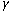
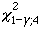
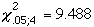

|
7.
Product and Process Comparisons
7.2. Comparisons based on data from one process 7.2.5. What intervals contain a fixed percentage of the population values?
|
|||
| Tolerance intervals can be constructed for a distribution of any form | The methods on the previous pages for computing tolerance limits are based on the assumption that the measurements come from a normal distribution. If the distribution is not normal, tolerance intervals based on this assumption will not provide coverage for the intended proportion p of the population. However, there are methods for achieving the intended coverage if the form of the distribution is not known, but these methods may produce substantially wider tolerance intervals. | ||
| Risks associated with making assumptions about the distribution | There are situations where it would be particularly dangerous to make unwarranted assumptions about the exact shape of the distribution, for example, when testing the strength of glass for airplane windshields where it is imperative that a very large proportion of the population fall within acceptable limits. | ||
| Tolerance intervals based on largest and smallest observations | One obvious choice for a two-sided tolerance interval for an unknown distribution is the interval between the smallest and largest observations from a sample of Y1, ..., YN measurements. This choice does not allow us to choose the confidence and coverage levels that are desired, but it does permit calculation of' combinations of confidence and coverage that match this choice. | ||
| Dataplot calculations for distribution-free tolerance intervals |
The Dataplot commands for calculating confidence and coverage levels
corresponding to a tolerance interval defined as the interval between the
smallest and largest observations are given below. The commands that are
invoked for twenty-five
measurements of resistivity from a
quality control study are the same as for producing
tolerance intervals for a normal
distribution; namely,
read 100ohm.dat cr wafer mo day h min ...
op hum probe temp y sw df
tolerance y
Automatic output for combinations of confidence and coverage is shown
below:
2-SIDED DISTRIBUTION-FREE TOLERANCE LIMITS:
INVOLVING XMIN = 97.01400 AND XMAX = 97.11400
CONFIDENCE (%) COVERAGE (%)
100.0 0.5000000E+02
99.3 0.7500000E+02
72.9 0.9000000E+02
35.8 0.9500000E+02
12.9 0.9750000E+02
2.6 0.9900000E+02
0.7 0.9950000E+02
0.0 0.9990000E+02
0.0 0.9995000E+02
0.0 0.9999000E+02
Note that if 99% confidence is required, the interval that covers the
entire sample data set is guaranteed to achieve a coverage of only 75%
of the population values.
|
||
| What is the optimal sample size? | Another question of interest is, "How large should a sample be so that one can be assured with probability  that the tolerance interval will contain at least a proportion p of the population?" | ||
| Approximation for N |
A rather good approximation for the required sample size is given by
where  is the critical value of the chi-square distribution with 4 degrees of freedom that is exceeded with probability 1 - . |
||
| Example of the effect of p on the sample size |
Suppose we want to know how many measurements to make in order to guarantee
that the interval between the smallest and largest observations covers a
proportion p of the population with probability
=0.95. From the
table for the upper critical value
of the chi-square distribution, look under the column labeled 0.05 in
the row for 4 degrees of freedom. The value is found to be
 and
calculations are shown below for p equal to 0.90 and 0.99.
These calculations demonstrate that requiring the tolerance interval to cover a very large proportion of the population may lead to an unacceptably large sample size. |
||